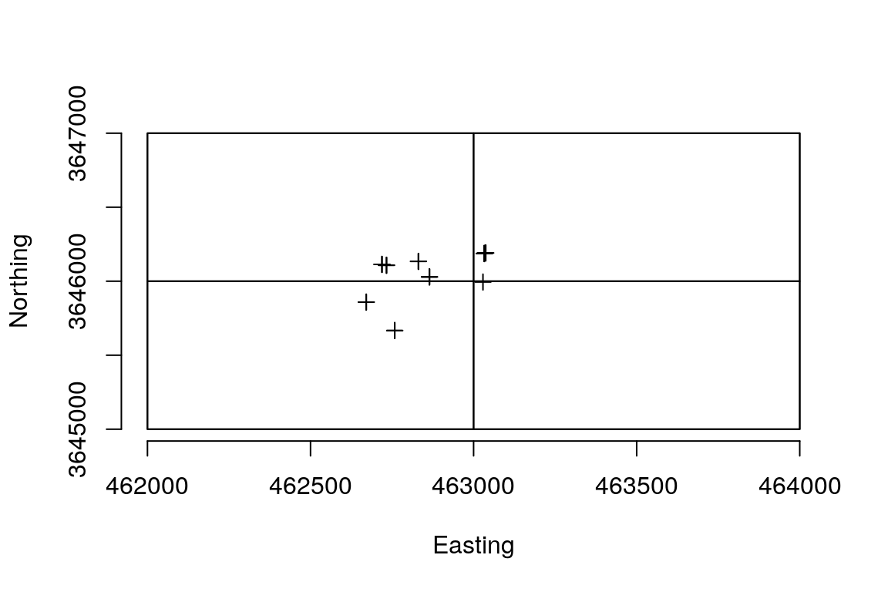
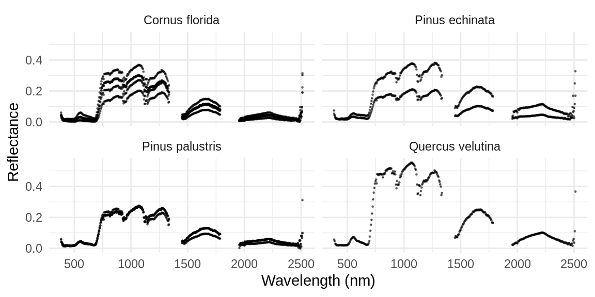

vignettes/extracting-hyperspectral-data-for-plant-species-in-neon-ground-plots.Rmd
extracting-hyperspectral-data-for-plant-species-in-neon-ground-plots.RmdThis vignette shows how the neonaop package can be combined with the neonUtilities and geoNEON packages to programmatically access woody vegetation data from NEON ground plots, and extract spectra from hyperspectral imagery.
library(raster)
library(neonUtilities)
library(geoNEON)
library(neonaop)
library(sp)
library(tidyverse)First, we need to download vegetation data (data acquisition steps below are adapted from the documentation in the neonUtilities and geoNEON packages):
zipsByProduct(dpID = "DP1.10098.001",
site = "TALL",
savepath = ".",
check.size = FALSE)
stackByTable("filesToStack10098", folder = TRUE)Then, we can read the mapping data and apparent individual data. We will restrict our focus to one year’s worth of data, to simplify the process of matching ground plot data in one year to the same year’s imagery.
vegmap <- "filesToStack10098/stackedFiles/vst_mappingandtagging.csv" %>%
read_csv %>%
mutate(year = substr(date, 1, 4)) %>%
filter(year == '2017') %>%
def.calc.geo.os("vst_mappingandtagging")
vegind <- read_csv("filesToStack10098/stackedFiles/vst_apparentindividual.csv")Merge mapping and individual data, and filter to live plants with coordinates:
veg <- right_join(vegind, vegmap,
by = c("individualID", "namedLocation",
"domainID", "siteID", "plotID")) %>%
filter(!is.na(adjEasting), !is.na(adjNorthing), plantStatus == "Live")Using this spatial data, we can acquire tiles of hyperspectral data that intersect the plants that were mapped on the ground.
byTileAOP(dpID = "DP3.30006.001", site = "TALL", year = "2017",
easting = veg$adjEasting, northing = veg$adjNorthing,
check.size = FALSE)
hs_paths <- list.files(path='.', pattern = 'reflectance.h5',
recursive = TRUE, full.names = TRUE)Now, create a SpatialPointsDataFrame of these points.
spdf <- SpatialPointsDataFrame(veg[, c('adjEasting', 'adjNorthing')],
data = veg,
proj4string = CRS(hs_proj4string(hs_paths[1])))Now, let’s visualize the extents of these hyperspectral images and the locations of the mapped plants:
extents <- lapply(hs_paths, hs_extent)
plot(do.call(raster::merge, extents), bty = 'n',
xlab = 'Easting', ylab = 'Northing')
plot(spdf, add = TRUE)
for (e in extents) {
plot(e, add = TRUE)
}
Each mapped plant location is covered by an extent object for a hyperspectral image. We can use the neonaop package to extract hyperspectral data at these locations.
out <- list()
for (i in seq_along(hs_paths)) {
res <- hs_extract_pts(hs_paths[i], pts = spdf, bands = 1:426)
first_band <- grep('^band1', names(res), value = TRUE)[1]
na_vals <- is.na(res[[first_band]])
out[[i]] <- res[!na_vals, ]
}Now let’s create a tibble for easy plotting:
hs_df <- lapply(out, as.data.frame) %>%
bind_rows %>%
as_tibble %>%
select(uid.x, adjEasting, adjNorthing, plantStatus, scientificName,
starts_with('band')) %>%
filter(plantStatus == 'Live') %>%
distinct
hs_df
#> # A tibble: 11 x 431
#> uid.x adjEasting adjNorthing plantStatus scientificName band1_384nm
#> <chr> <dbl> <dbl> <chr> <chr> <dbl>
#> 1 fa8a… 462671. 3645859. Live Pinus palustr… 0.0427
#> 2 018e… 462758. 3645667. Live Cornus florid… 0.0317
#> 3 97e7… 462831. 3646134. Live Pinus echinat… 0.054
#> 4 237a… 462865. 3646029. Live Pinus palustr… 0.0574
#> 5 f91d… 462865. 3646029. Live Pinus palustr… 0.0574
#> 6 e635… 462719. 3646114. Live Quercus velut… 0.0565
#> 7 73c2… 462733. 3646108. Live Cornus florid… 0.0421
#> 8 f68a… 463029. 3645994. Live Cornus florid… 0.0606
#> 9 8d73… 463033. 3646187. Live Cornus florid… 0.046
#> 10 f0f3… 463033. 3646187. Live Cornus florid… 0.046
#> 11 d9f7… 463037. 3646191. Live Pinus echinat… 0.0747
#> # … with 425 more variables: band2_389nm <dbl>, band3_394nm <dbl>,
#> # band4_399nm <dbl>, band5_404nm <dbl>, band6_409nm <dbl>,
#> # band7_414nm <dbl>, band8_419nm <dbl>, band9_424nm <dbl>,
#> # band10_429nm <dbl>, band11_434nm <dbl>, band12_439nm <dbl>,
#> # band13_444nm <dbl>, band14_449nm <dbl>, band15_454nm <dbl>,
#> # band16_459nm <dbl>, band17_464nm <dbl>, band18_469nm <dbl>,
#> # band19_474nm <dbl>, band20_479nm <dbl>, band21_484nm <dbl>,
#> # band22_489nm <dbl>, band23_494nm <dbl>, band24_499nm <dbl>,
#> # band25_504nm <dbl>, band26_509nm <dbl>, band27_514nm <dbl>,
#> # band28_519nm <dbl>, band29_524nm <dbl>, band30_529nm <dbl>,
#> # band31_534nm <dbl>, band32_539nm <dbl>, band33_544nm <dbl>,
#> # band34_549nm <dbl>, band35_554nm <dbl>, band36_559nm <dbl>,
#> # band37_564nm <dbl>, band38_569nm <dbl>, band39_574nm <dbl>,
#> # band40_579nm <dbl>, band41_584nm <dbl>, band42_589nm <dbl>,
#> # band43_594nm <dbl>, band44_599nm <dbl>, band45_604nm <dbl>,
#> # band46_609nm <dbl>, band47_614nm <dbl>, band48_619nm <dbl>,
#> # band49_624nm <dbl>, band50_629nm <dbl>, band51_634nm <dbl>,
#> # band52_639nm <dbl>, band53_644nm <dbl>, band54_649nm <dbl>,
#> # band55_654nm <dbl>, band56_659nm <dbl>, band57_664nm <dbl>,
#> # band58_669nm <dbl>, band59_674nm <dbl>, band60_679nm <dbl>,
#> # band61_684nm <dbl>, band62_689nm <dbl>, band63_694nm <dbl>,
#> # band64_699nm <dbl>, band65_704nm <dbl>, band66_709nm <dbl>,
#> # band67_714nm <dbl>, band68_719nm <dbl>, band69_724nm <dbl>,
#> # band70_729nm <dbl>, band71_734nm <dbl>, band72_739nm <dbl>,
#> # band73_744nm <dbl>, band74_749nm <dbl>, band75_754nm <dbl>,
#> # band76_759nm <dbl>, band77_764nm <dbl>, band78_769nm <dbl>,
#> # band79_774nm <dbl>, band80_779nm <dbl>, band81_784nm <dbl>,
#> # band82_789nm <dbl>, band83_794nm <dbl>, band84_799nm <dbl>,
#> # band85_804nm <dbl>, band86_809nm <dbl>, band87_814nm <dbl>,
#> # band88_819nm <dbl>, band89_824nm <dbl>, band90_829nm <dbl>,
#> # band91_834nm <dbl>, band92_839nm <dbl>, band93_844nm <dbl>,
#> # band94_849nm <dbl>, band95_854nm <dbl>, band96_859nm <dbl>,
#> # band97_864nm <dbl>, band98_869nm <dbl>, band99_874nm <dbl>,
#> # band100_879nm <dbl>, band101_884nm <dbl>, …And gather the hyperspectral columns (converting the data from wide to long form).
long_df <- hs_df %>%
gather(band, reflectance,
-starts_with('adj'), -plantStatus, -scientificName, -uid.x) %>%
separate(band, c('index', 'wavelength')) %>%
mutate(wavelength = parse_number(wavelength)) %>%
separate(scientificName, into = c('genus', 'species'), sep = ' ',
extra = 'drop', remove = FALSE) %>%
mutate(genusspecies = paste(genus, species)) %>%
# filter water vapor bands out
filter(!between(wavelength, 1340, 1445),
!between(wavelength, 1790, 1955))
long_df
#> # A tibble: 4,081 x 11
#> uid.x adjEasting adjNorthing plantStatus scientificName genus species
#> <chr> <dbl> <dbl> <chr> <chr> <chr> <chr>
#> 1 fa8a… 462671. 3645859. Live Pinus palustr… Pinus palust…
#> 2 018e… 462758. 3645667. Live Cornus florid… Corn… florida
#> 3 97e7… 462831. 3646134. Live Pinus echinat… Pinus echina…
#> 4 237a… 462865. 3646029. Live Pinus palustr… Pinus palust…
#> 5 f91d… 462865. 3646029. Live Pinus palustr… Pinus palust…
#> 6 e635… 462719. 3646114. Live Quercus velut… Quer… veluti…
#> 7 73c2… 462733. 3646108. Live Cornus florid… Corn… florida
#> 8 f68a… 463029. 3645994. Live Cornus florid… Corn… florida
#> 9 8d73… 463033. 3646187. Live Cornus florid… Corn… florida
#> 10 f0f3… 463033. 3646187. Live Cornus florid… Corn… florida
#> # … with 4,071 more rows, and 4 more variables: index <chr>,
#> # wavelength <dbl>, reflectance <dbl>, genusspecies <chr>Finally, we can plot the signatures for each species:
long_df %>%
ggplot(aes(wavelength, reflectance, group = uid.x)) +
geom_point(size = .2, alpha = .5) +
xlab('Wavelength (nm)') +
ylab('Reflectance') +
facet_wrap(~genusspecies) +
theme_minimal()